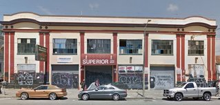
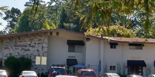

San Francisco YIMBY
News
About
Forums
facebook
twitter
News
 Historic Preservation Downsizes Mission District Development 2016-07-25
 Park Would Potentially Replace Apartments in Lafayette 2016-07-25
« Previous
| 1 |
Next »